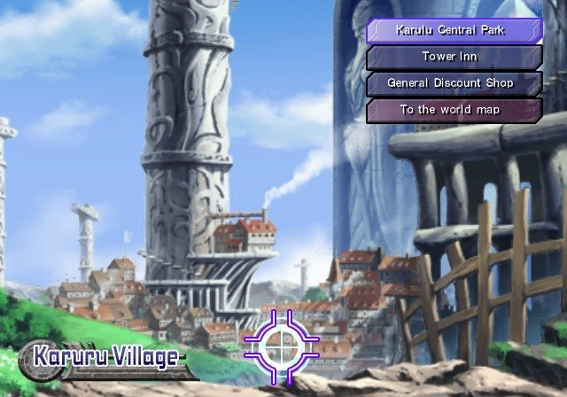

アルトネリコ 世界の終わりで詩い続ける少女
Descending from the floating upper city of プラティナ to the continents of ホルスの翼 in ソル・シエール, ライナー・バルセルト must track down the ヒュムネクリスタル Purger while protecting the レーヴァテイル who weave 詩魔法. Navigating a strict Phase 2 route split, missable トークマター, and deep コスモスフィア dives requires deliberate save timing if you want every ending and recipe without restarting from zero.

Walkthrough & Progression
Story progression across the three phases gates airship upgrades, コスモスフィア level caps, and グラスメルク recipes. Use these four sections to configure early habits, follow the optimal play order, track missable windows, and clear every dungeon and boss.
Beginner Tips
Save slots, inn rest habits, ダイブポイント buildup, and Vanguard guarding.
Play Order
Chronological sequence from Phase 1 through all seven endings with backup saves.
Missables
Route locks, シュレリア's pre-Lv.2 topic, Misha Lv.3 timing, and ending flags.
Main Story
Spoiler-free steps for Phase 1, Phase 2 split routes, and Phase 3 climax.
Cosmospheres & Song Magic
Diving into each レーヴァテイル's mental world unlocks her strongest Red, Blue, and Green 詩魔法 alongside stat-altering costumes. Follow each individual dive chart to clear every level without wasting ダイブポイント.
オリカ Cosmosphere
Levels 1 through 9 plus Level E, costume unlocks, and healing or fire 詩魔法.
ミシャ Cosmosphere
Levels 1 through 9 plus Level E, child-form Lv.3 check, and lightning or ice spells.
シュレリア Cosmosphere
Levels 1 through 5 required in Phase 3 for Complete Endings and true route selection.
Party Builds, Mechanics & Exploits
Combat performance depends far more on socketed グラスノ結晶 and crafted グラスメルク equipment than raw character level. Consult these three references to optimize Vanguard and レーヴァテイル loadouts, master ハーモニクス, and fund your crafting through infinite リーフ synthesis.
Party Builds
Weapons, armor, and グラスノ結晶 setups for all 5 Vanguards and 3 Reyvateils.
Mechanics
ハーモニクス levels, burst timing, guarding, グラスメルク, and 結晶化.
Exploits
The グラバート羅針盤 profit loop, スピカ shop resets, and DP grinding.